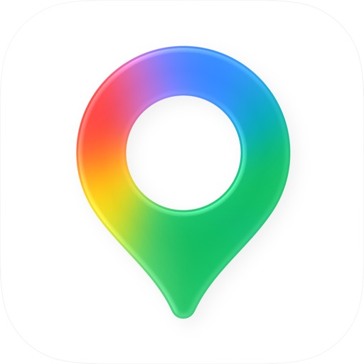

1. Traffic and commuting
Waze is built around live driver reports and quick rerouting. It can be useful for commuters who care about incidents, hazards, and road reports.
Navigation App Comparison
Waze and Google Maps are both strong navigation apps, but they are best for different driving situations.
Choose Waze if you mainly drive, commute, and want crowd-sourced road alerts, hazards, police reports, and fast rerouting. Choose Google Maps if you need broader place search, offline maps, walking directions, public transit, business info, and travel planning. Many drivers keep both installed: Waze for daily driving alerts and Google Maps for discovery, transit, offline use, and multi-purpose navigation.
Use this checklist before changing account settings, reinstalling an app, sending money, or trusting a support link.
This guide is independent and is not an official Waze page. Use official sources when you need downloads, account access, verification help, payment status, or safety guidance.
Open the official app store, official site, or official help center directly. Do not trust random download mirrors, support phone numbers, or messages asking for verification codes.

Waze is built around live driver reports and quick rerouting. It can be useful for commuters who care about incidents, hazards, and road reports.
Google Maps is usually stronger when you need offline maps, saved places, business info, walking routes, or trip planning across different transportation modes.
Google Maps has broader transit, walking, cycling, and place discovery features. Waze is mostly focused on driving.
Waze emphasizes reports from drivers, including crashes, hazards, closures, and police sightings where available.
Both apps can use battery and data during navigation. Offline maps in Google Maps can reduce data use for some trips.
Review location history, personalization, and account settings in both apps. Navigation apps can collect sensitive location patterns.
If a page, message, ad, or support account asks you to share one-time codes, passwords, payment details, or remote access, stop and verify through the official app or official help page.
If the main app path does not work, use a safer fallback instead of trusting unknown links.
Use the checklist first. If the issue is still unresolved, open the official help page or official app listing from this section.
Want a simple checklist for app login, download, verification, payment, and safety issues? Leave an email and we will send a lightweight guide when it is ready.
Waze is often better for live driving alerts, while Google Maps is broader for places, transit, offline maps, and travel planning.
For active commuting and driver reports, many people prefer Waze. Google Maps also has strong traffic estimates.
Waze is limited offline. Google Maps is usually better for saved offline maps.
Both can use significant battery during navigation. Screen brightness, GPS, data, and rerouting all matter.
Many drivers keep both: Waze for commute alerts and Google Maps for places, transit, and offline planning.